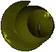

© 1991

Sigmund stood next to the high, oak door. A green, slimy ooze gradually worked
its way under the low crack at the bottom- a sure sign that something was amiss.
Of course, Sigmund was not the perceptive sort of person to pick it up and, as he
laid his hand on the doorknob, was instantly vaporised. This, however, did not
stop Sigmund. He was the sort of person that didn't let little things set him
back. The pressure that thrust Sigmund's body into oblivion reeled his remains
through the window behind him, thus striking the milk delivery boy with pieces of
falling glass. The green ooze gradually seeped down the frame of the broken
window.
The youthful milkman, being inexperienced in such matters, fell back into his
delivery van, tripping the brake and sending the Kombi off down the road,
swerving dangerously whilst endeavouring to pick the fragments of glass from his
head. The parson was the other casualty, when the milk van ended up a factory of
curds and whey inside the engine of a semi-trailer coming up the road. The poor
priest shot out to the side of the road-train, flying off the highway overpass
and into the lanes of speeding traffic. The bike was scraped up by a stingy
motorist, but the body was left for a crow to use his secret spatula upon.
Whilst the last of the front wheel was uploaded into the trunk of the cherry red
Volks Wagon Microbus, an entire busload of Japanese tourists collected the
overjoyed driver and sped into an oncoming freight train by launching off the
side of the road and onto the local railway tracks.
The train was, of course, de-railed and thousands of people were crushed as the
serpent length of the train squished over workers and passengers alike. Suitcases
and travel bags rolled down the steep hill behind the train station, emptying
their contents all over the beach below, much to the delight of the Microbus
owner's wife: she had been swimming in her $4.90 swimming costume. A sinister
canister of kermit-green ooze containing a strong acid fell and smashed open,
sending intoxicating fluid through the air, and therefore, through all the
horrified onlookers. The instant vaporisation of the multitudes of terrified
people caused horrendous damage to the air patterns surrounding the base of the
steep beach, thus sending shockwaves of destruction all around. The city fell in
a matter of milliseconds and all the air traffic was detoured via orbit of the
moon, none of which returned.
Sigmund's vapours gradually joined the other waste gases of all those destroyed
by the terrific accident, slowly being blown with the four winds, dissolving all
in their path. Meanwhile, the green ooze slowly dripped down the front stairs of
Sigmund's house, slurping into, it noticed with interest, the abnormal number of
dead parrots as it went.